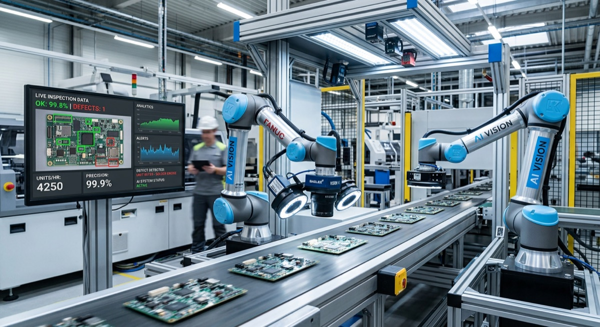

P-01AI Visual Inspection
Pharma · Automotive · Discrete
Edge-deployed computer vision trained on line-specific defect libraries — surface, dimensional, print and assembly-completeness — with sub-second inference and a human-in-the-loop review queue.
- Reduced escaped-defect rate and less end-of-line manual sampling
- Audit-ready defect trail suitable for GMP and OEM reviews